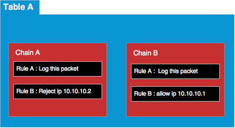

iptables 是 Linux 系統內建的防火牆設定 ，專門用來過瀘網路封包，正確的設定 iptables 規則可以有效提升 linux 網路安全，例如網管人員需要設定開放哪些 IP 與哪些 Port，來阻擋駭客們的 IP ，防止 DDos 攻擊。
iptables 的設計結構可以分三層， Table -> Chains -> Rules ， iptables 中可以包含多個 Table ，而一個 Table 又可以包含多個 Chain ，一個 Chain 也可以包含多個 Rule 。
- Table ：防火牆規則群組。
- Chain：防火牆規則鏈。
- Rule：防火牆規則。

上面中 Table A 裡設定了兩個 Chain 分別是 Chain A 與 Chain B ，而這兩個 Chain 又分別設定了兩個 Rule ，一個是記錄封包資訊，然後第二個 Rule 再來決定是否要丟棄這個封包。
Chains & Tables
iptables 內建有五個 Tables ， 分別是 Filter Table, NAT Table, Mangle Table, Raw Table, Security Table。
Filter Table :
Filter Table 是 iptables 中預設的 table，如果你沒有新增自訂的 Table ，那麼 iptable 會使用 Filter Table 裡的設定來處理網路封包。
Filter Table 預設有三個 Chain : INPUT, OUTPUT, FORWARD， 分別用來處理三種不同的網路封包。
- INPUT chain：處理由外部機器傳過來的封包。
- OUTPUT Chain：處理本機傳出去給別台機器的封包。
- FORWARD Chain：處理外部機器透過本機，要傳給第三方機器的封包，如果你的機器是一台 Router or Proxy，才會存在這種封包。
NAT Table : Network Address Translation
NAT Table 預設有二個 Chain ： PREROUTING, POSTROUTING 。
- PREROUTING chain : 再 Routing 之前轉換封包來源 IP 資訊，例如。
- POSTROUTING chain : 再 Routing 之後轉換封包本機 IP 資訊，例如本機 IP 會寫成 127.0.0.1 ，但是傳送出去後，會轉換回對外開放的 IP 如 10.99.82.1。
Rule & Target
iptables 預設有三種 Target ，分別是 ACCEPT, REJECT, LOG 。
- ACCEPT：接受這個封包
- REJECT：拒絕這個封包
- LOG： 記錄下這個封包， Log 寫入檔案 /var/log/message
如何使用 iptables
使用 iptables 前，前先確定你的系統有安裝以下兩個套件。
- iptables
- iptables-services
安裝方式如下：
sudo yum install iptables-services iptables
iptables 自訂 Chain
除了上述提到的三個基本的 Chain 之外，iptables 還可以自訂其他的 Chain ， chain 是鎖鏈的意思，代表各種不同的 chain 可以串接在一起，合成多種組合。
自定義一個新的 chain
iptables -N LOG_REJECT
新增一個 rule ， 這個 chain 的所有封包會寫入 LOG。
iptables -A LOG_REJECT -j LOG --log-prefix "Reject this packet : " --log-level 6
新增一個 rule ， 這個 chain 的所有封包會被拒絕處理。
iptables -A LOG_REJECT -j REJECT
上面三個 rule 就能組合出一個簡單的封包阻檔規則，凡是所有進入 "LOG_REJECT" 這個 chain 的封包，都會先寫一個 log 到 /var/log/message 這個檔案，然後這個封包會被丟棄，完全不處理。
最後我們只要再指定那些 IP 會進入這個 LOG_REJECT Chain ，便可以輕鬆的阻擋他們。
iptables 參數
- -I, --insert chain [rulenum] rule-specification ： -I 代表 insert 的意思，新增一個 rule ，
- 第一個參數會 chain 的名稱
- 第二個參數為 rule 的順序，預設值為 1 ，如果你指定為 1 ，那麼新的 rule 會放在列表的最上頭。
- 範例： sudo iptables -I INPUT 1 -j ACCEPT
- -j, --jump target ：當封包符合這個 rule ，透過 -j 的指示，將這個封包丟到指定的 chain 去決定下一個行為。
我們可以使用指令 " sudo iptables -N newChain "，來建立一新的 chain 叫 "newChain" ，再透過 -j newChain ，將封包下一步的行為傳到這個新的 chain 來決定，例如下面這個範例，我將 80 port 的所有封包丟給 newChain 來決定要怎麼處理，"newChain" 裡面再指定 "-j REJECT"， REJECT 是一個預設的 Rule Target ，代表拒絕這個封包。
- iptables -N newChain
- iptables -A newChain -j REJECT
- iptables -I INPUT 1 --dport 80 -j newChain
- -i, --in-interface name : 指定網卡代號，可以用 any 代表全部的網卡
- -D, 刪除一條 iptables 規則，"INPUT 1" 代表 iptables list 中的第一條規格。
sudo iptables -D INPUT 1
restart iptables 會重新 initialize 所有的 iptable rule ，預設的 rule 會從 /etc/sysconfig/iptables 這個檔案取得，所以當每次 restart iptables 後，一定要記得重新增加自訂的 rule 。
sudo service iptables restart
使用 -F 參數可以清除 iptables 所有的 rule 。
sudo iptables -F
使用 iptables-save 參數可以儲存所有的 chain & rule 。
sudo iptables-save > myIptables
如何阻擋某一段 IP 訪問 80 Port，並將阻擋的記錄寫入 /var/log/message
如果你的電腦常常且持續的被某一些固定 IP 攻擊，那麼你可以試著用下列這個方式來阻擋駭客攻擊。
- sudo iptables -N LOG_REJECT
- sudo iptables -A LOG_REJECT -j LOG --log-prefix "INPUT:REJECT: " --log-level 6
- sudo iptables -A LOG_REJECT -j REJECT
- sudo iptables -I INPUT -p tcp --dport 80 -j ACCEPT
- sudo iptables -I INPUT -s 11.123.0.0/16 -p tcp --dport 80 -j LOG_REJECT
Forward port to others
- iptables -P FORWARD ACCEPT
- iptables -t nat -A PREROUTING -i eth0 -s 192.168.1.0/24 -p tcp --dport 80 -j DNAT --to 127.0.0.1:443
防止 DDoS 攻擊
網路上有很多壞人，會用程式不斷的再我們的網站上留言，所以我寫了一個簡單的小工具叫 DDoS Defender，用來阻擋這個壞人的 IP。
這個工具主要是用來防止壞人不斷的用 POST 來寫資料，預設的規則是若是該 user 五分鐘內有超過五次 POST ，DDoS Defender 就會將該 IP 寫入 Linux iptables 的 Reject 名單，如此這個 IP 就再來不能進到我們的網站。